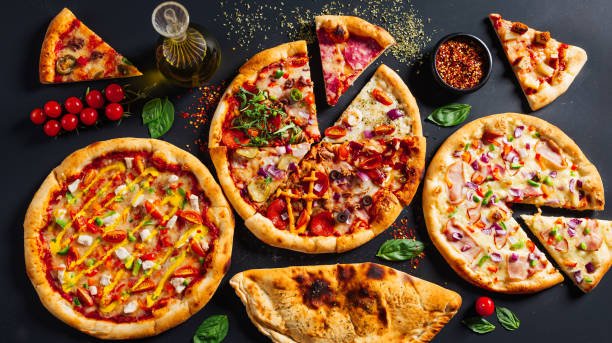
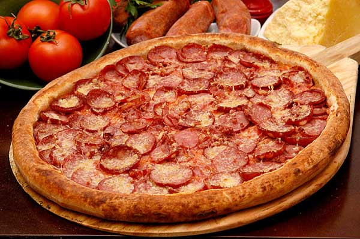
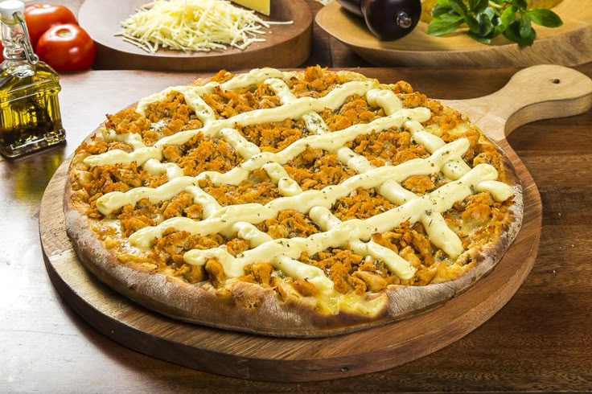

Pizzas artesanais preparadas com ingredientes selecionados pelo própio Chef e muito sabor.


Molho de tomate, mussarela, calabresa e orégano.
R$ 45,00

Molho de tomate, frango desfiado, cebola, catupiry e orégano
R$ 50,00